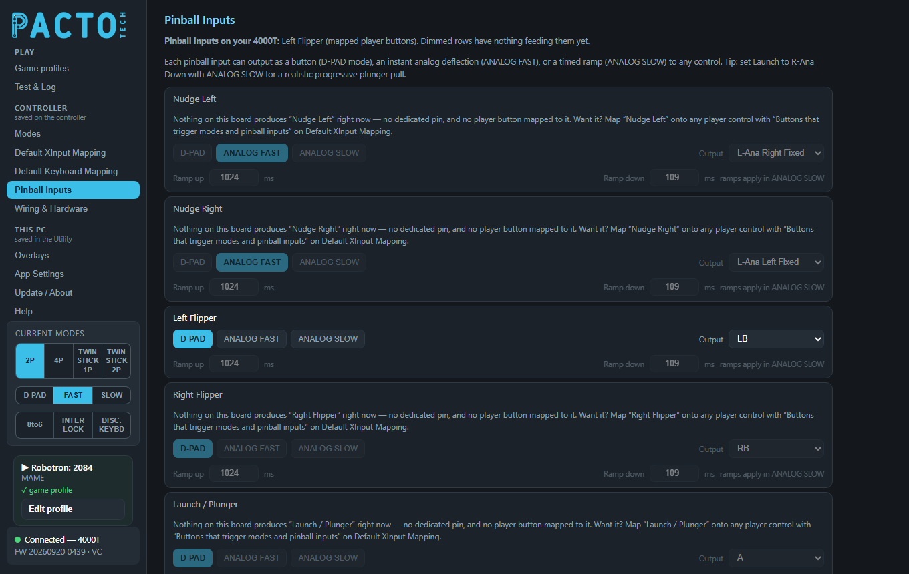
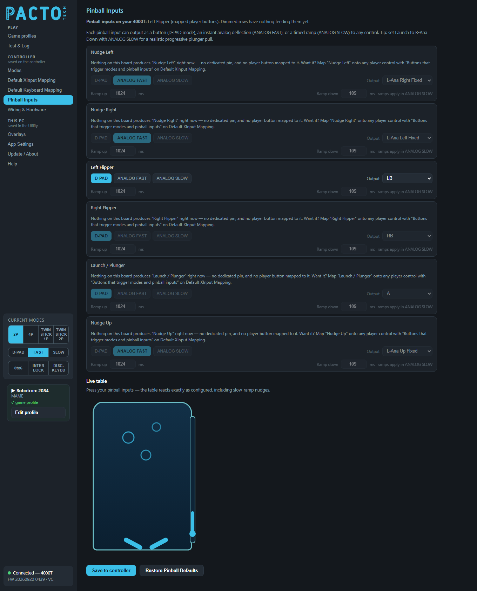

Choose what each pinball input sends to the PC (a button, an instant stick push or a gradual one) and try it out on a live pinball table.

Pinball Inputs is in the Controller group of the sidebar: its settings are stored on the board when you press Save to controller.
| Pinball inputs | Boards with dedicated pins |
|---|---|
| Nudge Left, Nudge Right (and Nudge Up) | 1000T, 2000T, 2000H, 4000H2, SNAP2 |
| Left Flipper, Right Flipper, Launch / Plunger | 2000H, 4000H, 4000H2 |
The line under the page title always tells you where you stand:
This is only possible if you can spare inputs for it, because each pinball input borrows one of the board's existing inputs. Spare inputs can be:
Then, on Default XInput Mapping, go to Buttons that trigger
modes and pinball inputs, press Add mapping, choose the spare input and pick one of the PINBALL:
functions (Nudge Left, Nudge Right, Left Flipper, Right Flipper,
Launch / Plunger, Nudge Up). If your controller's firmware supports it, also tick
Stop game output on that row, so the borrowed button no longer sends its own button to games. Press Save to
controller; the Pinball Inputs page then unlocks that row.
Nudge Up doesn't have its own pin. Press Nudge Left and Nudge Right together and the board treats it as Nudge Up.
There is one row for each of the six pinball inputs: Nudge Left, Nudge Right, Left Flipper, Right Flipper, Launch / Plunger and Nudge Up. Each row has the same controls.
| Control | What it does |
|---|---|
D-PAD · ANALOG FAST · ANALOG SLOW |
How the input behaves. D-PAD acts as a button, ANALOG FAST gives an instant
full analog push, and ANALOG SLOW gives a timed ramp using the ramp times below. |
| Output | What the input sends. The choices are:
|
| Ramp up / Ramp down (ms) | For ANALOG SLOW: how long the push takes to build to full (Ramp up) and to die away after
you let go (Ramp down), from 0 to 2000 ms. In the other two modes these boxes are dimmed and marked
ramps apply in ANALOG SLOW. |
The mode only makes a difference when the output is a stick direction (L-Ana /
R-Ana) or a trigger (LT / RT). Buttons and D-pad directions are simply pressed for as
long as you hold the input.
Unlike the Analog Slow joystick mode (on the Modes page), a pinball ramp starts from zero, so a slow nudge really does build up from nothing.
R-Ana Down Fixed with ANALOG SLOW
for a realistic, progressive plunger pull.| Input | Mode | Output |
|---|---|---|
| Nudge Left | ANALOG FAST | L-Ana Right Fixed |
| Nudge Right | ANALOG FAST | L-Ana Left Fixed |
| Left Flipper | D-PAD | LB |
| Right Flipper | D-PAD | RB |
| Launch / Plunger | D-PAD | A |
| Nudge Up | ANALOG FAST | L-Ana Up Fixed |
Every input's default ramp times are 1024 ms up and 109 ms down.

Press your pinball inputs and the drawing reacts exactly as configured, including slow-ramp nudges. Nudges shove the table and light up that side, the flippers flip, the plunger pulls back, and the name of each input flashes in the middle as you press it. The table follows the settings currently on the page, even before you save them, so you can try changes first.